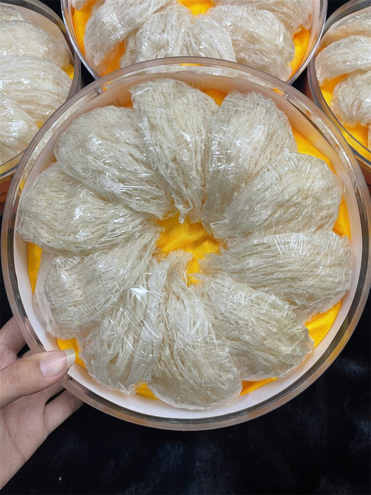
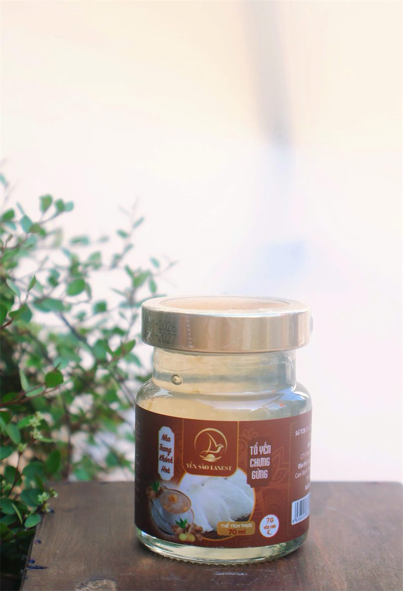

Cách Chọn Mua Yến Sào Chuẩn, Tránh Các Chiêu Trò Thường Gặp
Yến Sào Lanest · Đăng ngày 11/10/2026

Nhìn mùi, nhìn sợi, ngâm thử là những cách kiểm tra khi hộp yến đã nằm trong tay. Nhưng phần lớn rủi ro nằm ở bước trước đó: mua ở đâu, giấy tờ có đủ không, nhãn ghi gì, người bán trả lời ra sao. Bài này tập trung vào cách chọn mua yến sào trước khi xuống tiền, từ góc nhìn của người làm nghề. Còn cách phân biệt bằng mắt, anh chị xem thêm bài phân biệt yến sào thật – giả.
Hộp tổ yến tinh chế: nhìn được từng sợi qua nắp trong, nhưng giấy tờ và người bán mới nói được phần còn lại
1. Chọn nơi bán: hỏi xem ai làm ra hộp yến này
Câu hỏi đầu tiên không phải "bao nhiêu tiền" mà là "ai làm". Một đơn vị tự làm sạch, tự kiểm hàng thì trả lời được từng công đoạn. Một nơi chỉ nhập qua tay rồi đóng gói lại thì nhiều khi chính họ cũng không biết yến đã qua những bước nào.
Lanest từng ở vị trí người mua qua tay. Năm đó người sáng lập Lanest đem 100g yến tinh chế vừa mua về ngâm ra rồi sấy khô lại để cân thử. Kết quả, theo lời chị kể:
"thì nó chỉ còn có 84 g thôi. Tức là người ta làm ăn gian dối với mình á"
Từ năm 2023, Lanest có đội thợ riêng, mỗi mẻ yến đi qua 4 chốt kiểm: thợ nhặt, thợ đảo lại, thợ đắp, nhân viên kiểm tra trước khi đóng hộp. Chi tiết có trong bài bên trong xưởng yến Lanest. Anh chị không cần mua của Lanest, nhưng nên mua của nơi kể được rõ ràng như vậy.
2. Giấy tờ: hóa đơn, chứng nhận và phiếu kiểm nghiệm
Giấy tờ là thứ khó làm giả hơn sản phẩm bên trong. Có ba loại nên hỏi:
- Hóa đơn. Không chỉ để đúng luật: chính sách đổi trả của Lanest yêu cầu khách có hóa đơn mua hàng. Không có hóa đơn thì khi hàng lỗi, anh chị gần như không có gì trong tay.
- Chứng nhận an toàn thực phẩm của đơn vị sản xuất, ví dụ ISO 22000:2018 mà Lanest đang giữ.
- Bản tự công bố sản phẩm và phiếu kiểm nghiệm. Với dòng Yến Sào Tinh Chế Lanest, phiếu kiểm nghiệm ghi rõ không phát hiện Salmonella, không phát hiện kim loại nặng, không phát hiện nitrit, SO₂, hydro peroxit.
Chuyện hóa đơn nghe khô khan nhưng là chuyện sống còn của nghề. Người sáng lập Lanest từng giải thích vì sao nhiều nhãn yến quanh mình lần lượt đóng cửa:
"hồi trước có rất nhiều nhãn hàng ở đây nhưng người ta làm sản phẩm yến cho không đạt nên người ta ngưng hoặc người ta không xuất hóa đơn đầy đủ, sợ kiểm tra ngược lại nên ngưng, hoặc cắt máu quá sát không đủ khả năng duy trì."
Mua của một nơi né hóa đơn, anh chị có thể mất luôn chỗ bảo hành khi nhãn đó ngừng bán.
3. Đọc nhãn: bốn dòng nên nhìn trước tiên

Nhãn hũ Tổ Yến Chưng Gừng Lanest: thể tích 70ml, 7g yến tươi, hạn dùng in trên nắp, số tự công bố in bên hông
- Hạn sử dụng in rõ, còn hạn. Yến Sào Tinh Chế Lanest có hạn 24 tháng kể từ ngày sản xuất theo hồ sơ tự công bố.
- Số tự công bố của sản phẩm.
- Khối lượng hoặc thể tích. Yến tinh chế Lanest chỉ có hộp 50g và 100g; yến hũ là hũ 70ml.
- Thành phần, và để ý chữ "yến tươi" hay "tổ yến". Yến tươi là yến đã ngâm nở, tổ yến là yến khô. Hai đơn vị này chênh nhau nhiều: trên hũ nguyên chất của Lanest, 1,5g tổ yến tương đương khoảng 15g yến tươi.
Một nhãn tử tế là nhãn khai đủ. Ví dụ hũ yến chưng 7g của Lanest ghi đầy đủ cả chất ổn định và hương yến tổng hợp bên cạnh 7g yến tươi; còn dòng hũ nguyên chất ghi thành phần gồm nước tinh khiết, tổ yến, đường phèn, kèm đông trùng hạ thảo hoặc gừng tùy vị. Đọc kỹ để biết mình đang trả tiền cho loại nào.
4. Sáu câu nên hỏi người bán
- Đây là yến thô hay yến tinh chế? Nếu tinh chế thì làm sạch bằng cách nào: rút lông khô (phun sương, không ngâm nước) hay ngâm nước nhặt lông?
- Tỷ lệ sợi thế nào: 100% sợi, 70% sợi – 30% xơ mướp bụng, 50/50, hay yến vụn đắp tổ?
- Có xuất hóa đơn không?
- Có bản tự công bố và phiếu kiểm nghiệm không?
- Hàng lỗi thì đổi trả thế nào, trong bao lâu, cần giữ những gì?
- Có được kiểm hàng trước khi thanh toán không?
Người bán trả lời rõ, không vòng vo là một tín hiệu tốt. Ví dụ ở Lanest: đổi trả trong 15 ngày kể từ ngày nhận hàng, cần hóa đơn và video quay lúc mở hộp; đơn giao thu tiền khi nhận (COD) thì được kiểm tra sản phẩm trước khi thanh toán.
5. Các chiêu trò thường gặp
| Giá rẻ bất thường | Yến là mặt hàng giá trị cao. Giá thấp hẳn so với mặt bằng mà không giải thích được là dấu hiệu đầu tiên nên dừng lại. |
| Độn tăng trọng lượng | Người mua không nhìn thấy được. Cách kiểm tra là cách người sáng lập Lanest đã làm: ngâm ra, sấy khô lại rồi cân. |
| Tẩy trắng | Yến làm sạch đúng cách vẫn có thể mang màu kem hoặc cam vàng tự nhiên, không nhất thiết trắng đều. Lanest không tẩy trắng. |
| Hàng pha trộn | Khi ngâm nở nhanh bất thường, nhũn thành mảng; khi chưng nước đục, có mùi lạ. |
| Không rõ xuất xứ | Không tem niêm phong, không thông tin đơn vị sản xuất, không hóa đơn. |
6. Lúc nhận hàng: bước kiểm tra cuối cùng
- Hộp, hũ nguyên vẹn, tem niêm phong còn nguyên.
- Đúng số lượng, đúng loại, còn hạn sử dụng.
- Quay video lúc mở hộp để có bằng chứng nếu cần đổi trả.
Sau đó là chuyện cất giữ trong nhà, anh chị xem bài cách bảo quản tổ yến.
Câu hỏi thường gặp
Yến rẻ hơn hẳn chỗ khác có nên mua không?
Nên hỏi kỹ vì sao rẻ: loại yến gì, tỷ lệ sợi bao nhiêu, có hóa đơn và phiếu kiểm nghiệm không. Không trả lời được thì không nên mua.
Làm sao biết yến tinh chế có bị độn cân?
Bằng mắt rất khó thấy. Cách chắc nhất là ngâm một phần ra, sấy khô lại rồi cân so với khối lượng ghi trên hộp, như người sáng lập Lanest từng làm.
Mua yến online cần lưu ý gì?
Chọn nơi có thông tin công ty rõ ràng, có hóa đơn, có chính sách đổi trả bằng văn bản; khi nhận hàng thì kiểm tra tem niêm phong, hạn dùng và quay video lúc mở hộp.